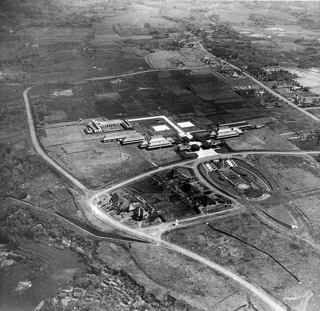
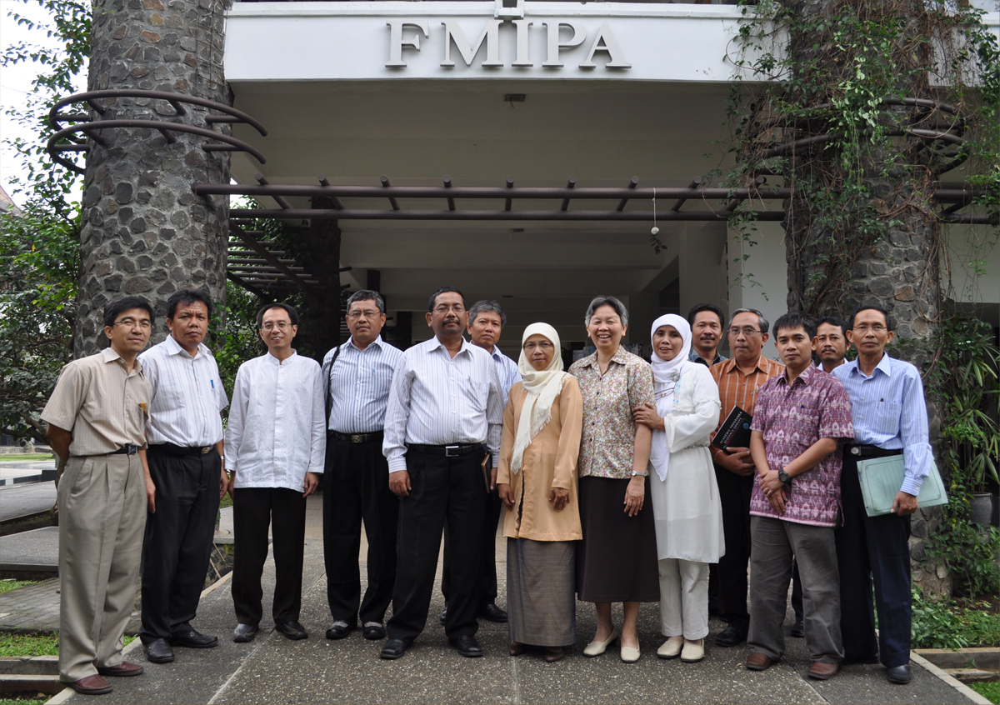

Institut Teknologi Bandung (ITB) adalah sebuah perguruan tinggi negeri yang terletak di Kota
Bandung, Jawa Barat. Nama ITB diresmikan pada tanggal 2 Maret 1959. Sejak tanggal 14 Oktober
2013, ITB menjadi Perguruan Tinggi Negeri Badan Hukum (PTN BH) yang memiliki otonomi pengelolaan
dalam akademik dan nonakademik.
ITB saat ini memiliki empat kampus yakni:
Kampus Ganesa, terletak di Jl. Ganesa No.10, Kecamatan Coblong, Kota Bandung, Jawa Barat.
Kampus Jatinangor, terletak di Jl. Let. Jend. Purn. Dr. (HC) Mashudi No.1, Kecamatan Jatinangor, Kabupaten Sumedang, Jawa Barat.
Kampus Cirebon, terletak di Jl. Kebonturi, Kecamatan Arjawinangun, Kabupaten Cirebon, Jawa Barat.
Kampus Jakarta, terletak di Gedung Graha Irama (Indorama) Lt. 10 & 12 Jl. H. R. Rasuna Said Kav. 1 Setiabudi Kota Jakarta Selatan, DKI Jakarta.
Sejarah

Pemandangan ITB pada zaman Belanda
Sejarah Pendidikan Tinggi Teknik di Indonesia berawal pada abad ke-20, ketika pemerintah kolonial Belanda mendirikan de Techniche Hoogeschool te Bandung (TH) pada 3 Juli 1920 di lahan seluas 30 hektar di Bandung.
Saat itu hanya terdapat satu fakultas yaitu de Faculteit van Technische Wetenschap dan hanya satu jurusan yaitu de afdeeling der We gen Waterbouw. Pendirian perguruan tinggi ini dimaksudkan untuk memenuhi kebutuhan
tenaga teknik yang semakin terbatas pada masa kolonial Belanda akibat pecahnya Perang Dunia pertama.
Kemudian saat pendudukan Jepang pada 1944-1945, TH berubah nama menjadi Bandung Kogyo Daigaku (BKD) dan menjadi Sekolah Tinggi Teknik (STT) Bandung setelah Indonesia merdeka. Selanjutnya pada 1946, sempat berpindah
ke Yogyakarta dengan sebutan STT Bandung di Jogja yang kemudian menjadi Universitas Gadjah Mada (UGM). Pada 21 Juni 1946, terjadi perubahan nama menjadi Universiteit van Indonesie di bawah kendali NICA dengan Faculteit
van Technische Wetenschap dan Faculteit van Exacte Wetenschap berdiri kemudian. Setelah itu pada 1950-1959 menjadi bagian dari Universitas Indonesia untuk Fakultas Teknik dan Fakultas Ilmu Pasti dan Ilmu Alam.
Didorong oleh gagasan dan keyakinan yang dilandasi semangat perjuangan proklamasi kemerdekaan serta wawasan ke masa depan, Pemerintah Indonesia meresmikan berdirinya Institut Teknologi Bandung pada tanggal 2 Maret 1959.
Berbeda dengan harkat pendirian lima perguruan tinggi teknik sebelumnya di kampus yang sama, Institut Teknologi Bandung lahir dalam suasana penuh dinamika mengemban misi pengabdian ilmu pengetahuan dan teknologi, yang
berpijak pada kehidupan nyata di bumi sendiri bagi kehidupan dan pembangunan bangsa yang maju dan bermartabat.
Fakultas dan Sekolah

Gedung FMIPA ITB
Fakultas adalah unit pendidikan di ITB yang memiliki beberapa program studi (dulu departemen), baik di tingkat sarjana, magister, maupun doktor. Sementara itu, sekolah adalah unit pendidikan yang memiliki
beberapa program studi dengan bidang keilmuan yang berdekatan.
Berikut daftar Fakultas dan Sekolah di ITB:
Fakultas Matematika dan Ilmu Pengetahuan Alam (FMIPA)
Sekolah Ilmu dan Teknologi Hayati (SITH)
Sekolah Farmasi (SF)
Fakultas Ilmu dan Teknologi Kebumian (FITB)
Fakultas Teknik Pertambangan dan Perminyakan (FTTM)
Sekolah Teknik Elektro dan Informatika (STEI)
Fakultas Teknologi Industri (FTI)
Fakultas Teknik Sipil dan Lingkungan (FTSL)
Fakultas Teknik Mesin dan Dirgantara (FTMD)
Sekolah Arsitektur, Perencanaan dan Pengembangan Kebijakan (SAPPK)